前端面试题汇总
VUE面试题
1、v-show 和 v-if的区别，v-show 和 keep-alive 的区别
答案：v-show是 CSS display 控制显示和隐藏
v-if 是组件真正的渲染和销毁，而不是显示和隐藏
频繁切换显示状态用 v-show，否则用 v-if
keep-alive 是在vue 框架层级进行的JS 对象渲染
一般简单的可用 v-show，
复杂一点的一般用 keep-alive，keep-alive 通常用于 tab 的切换
2、为何 v-for 要用 key
答案：必须要用 key, 而且不能用 index 和 random，
key是vue中vnode的唯一标记，通过这个key，我们的diff操作可以更准确，更快速
在 diff 算法中用 tag 和 key来判断，是否是sameNode
可以减少渲染次数，提高渲染性能
3、描述 Vue 组件生命周期（有父子组件的情况）
答案：单组件生命周期，生命周期可分为
- 挂载阶段（
- beforeCreate:此阶段为实例初始化之后,此时数据观察和事件机制还没有形成,不能获取到dom节点；
- created：此阶段的vue实例已经创建,仍不能获取DOM 节点.把vue 的一个实例给初始化了，只是存在于 js 内存的一个变量而已，这个时候并没有开始渲染；
- beforeMount:在这一阶段,我们虽然还不能获取到具体 DOM 元素,但 vue 挂载的根节点已经创建,下面 vue 对DOM 的操作将围绕这个根元素继续进行,beforeMount 这个阶段是过渡性的,一般一个项目只能用到一两次；
- mounted：组件真正绘制完成了，页面已经渲染完了,数据和DOM 都已被渲染出来,一般我们的异步请求都写在这里)
- 更新阶段（
- beforeUpdate: 这一阶段，vue遵循数据驱动DOM 的原则，beforeUpdate 函数在数据更新后没有立即更新数据，但是DOM 数据会改变，这是双向数据绑定的作用；
- updated：这一阶段，DOM 会和更改过的内容同步)
- 销毁阶段（
- beforeDestroy：在上一阶段vue已经成功通过数据驱动DOM 的修改，当我们不再需要 vue 操纵 DOM 时，就要销毁 vue，也就是清除vue 实例与 DOM 的关联，调用destroy方法可以销毁当前组件。在销毁前，会触发 beforeDestroy 钩子函数；
- destroyed：在销毁后，会触发destroyed 钩子函数）
beforeDestroy要做的事：
- 自定义事件解除绑定：（eventBus 等）
- 销毁定时任务：（setTimeout,setInterval等）
- 绑定的window 或 document 事件要销毁
总之就是该销毁的要在这里销毁，不要让他们留在内存中
具体参考：https://www.cnblogs.com/queenya/p/13416654.html
多组件生命周期：
- 挂载阶段（加载渲染过程）：
- 父 beforeCreate --> 父 created --> 父 beforeMount --> 子 beforeCreate --> 子 created --> 子 beforeMount --> 子 mounted --> 父 mounted
- 更新阶段：
- 父 beforeUpdate --> 子 beforeUpdate --> 子 updated --> 父 updated
- 销毁阶段：
- 父 beforeDestroy --> 子 beforeDestroy --> 子 destroyed --> 父 destroyed
4、Vue 组件如何通讯
答案：
- 父子组件通讯：使用属性和触发事件，props，$emit，this.$emit 调用父组件的事件，父组件向子组件传递一个信息，或者说子组件向父组件触发一个事件
- 组件之间没有关系或层级较深：使用自定义事件 ，event是vue实例，vue本身就具有自定义事件的能力。调用自定义事件： event.$emit('xxx', 变量名)；绑定自定义事件：event.$on('xxx', 函数名字)。在beforeDestroy 要做的一件事是及时解绑自定义事件，及时销毁，否则可能造成内存泄漏，写法：event.$off('xxx', 函数名).
- vuex 通讯
5、描述组件渲染和更新的过程
答案：
- 初次渲染过程：
- 解析模板为 render 函数（或在开发环境已完成， vue-loader）
- 触发响应式，监听 data 属性 getter，setter
- 执行 render 函数，生成 vnode, patch(elem, vnode)
- 更新过程：
- 修改 data，触发 setter （此前在 getter 中 已被 监听）
- 重新执行 render 函数，生成 newVnode
- patch(vnode, newVnode)
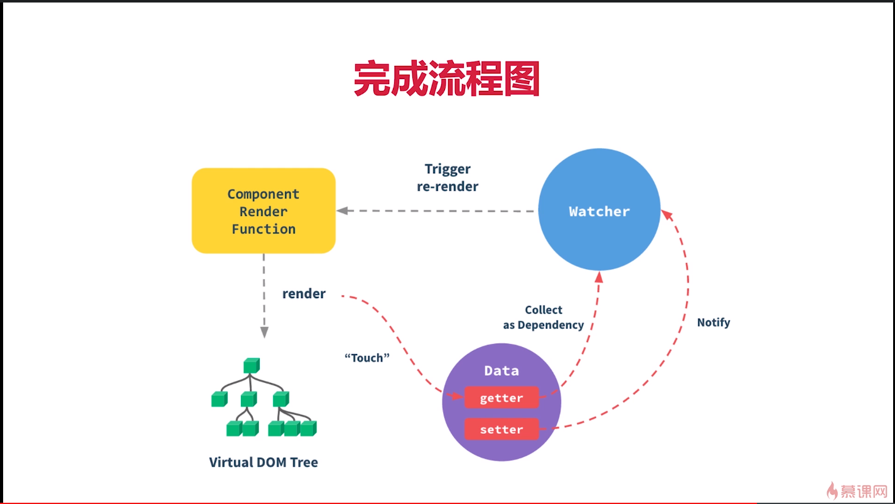
- 异步渲染：
- 回顾 $nextTick，（以下这是对 $nextTick的回顾： $nextTick: vue 是异步渲染；data改变之后，DOM 不会立刻渲染；$nextTick 会在 DOM 渲染之后被触发，以获取最新 DOM 节点。vue 为何是异步渲染，$nextTick何用？异步渲染（以及合并data修改），以提高渲染性能，$nextTick 在DOM 更新完之后，触发回调。另外，在 vue 中可以通过 ref 获取元素：给元素添加ref属性并设置名称，然后通过 this.$refs.ref 属性名称获取该DOM 元素）总结：1、异步渲染，$nextTick待 DOM 渲染完再回调；2、页面渲染时会将 data 的修改做整合，多次data修改只做一次渲染。
- 汇总 data 的修改，一次性更新视图
- 减少 DOM 操作次数，提高性能
6、双向事件绑定 v-model 的实现原理
答案：通过 input 元素的 value = this.name
绑定 input 事件 this.name = $event.target.value
data 更新触发 re-render
数据双向绑定的原理可参考：https://www.cnblogs.com/queenya/p/13426695.html 的第3 点
7、对 MVVM 的理解
答案：参考：https://www.cnblogs.com/queenya/p/13426695.html 第1、2点
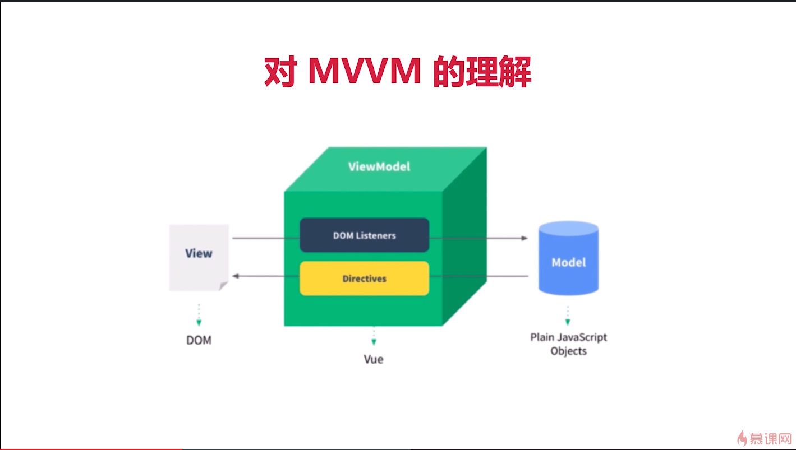
8、computed 有何特点，computed 和 watch，methods 的区别
答案：
- computed： 有缓存，data 不变不会重新计算；提高性能。
- computed 为什么需要缓存？简单说就是可以提高性能。假设我们有一个性能开销比较大的计算属性A,它需要遍历一个巨大的数组做大量的计算，然后我们可能有其他的属性依赖于A，如果没有缓存，将不可避免的多次执行A 的getter，如果不希望有缓存请用方法代替
- computed 和 methods的区别: computed 计算属性是基于它的响应式依赖进行缓存的，只在相关响应式依赖发生改变时它们才会重新求值，这意味着只要原属性还没发生改变，多次访问相关属性，计算属性会立即返回之前的计算结果，而不必再次执行函数；而 methods 每当触发重新渲染时，调用方法总会再次执行函数
- computed 和 watch的区别：computed 默认只要 getter，不过需要时也可以提供 setter；watch 侦听器，当需要在数据变化时执行异步或开销较大的操作时，watch是最有用的，使用 watch选项允许执行异步操作（访问一个API）,限制我们执行该操作的频率，并在得到最终结果前，设置中间状态，这些都是计算属性无法做到的
（
- computed 是属性
- 当需要根据已有数据产生一些派生数据的时候，可使用计算属性
- 注意：计算属性不支持异步操作，因为计算属性一般要绑定到模板中
- 更重要的一点是：计算属性会缓存调用的结果，提高性能
- 计算属性必须有返回值，没有返回值就没有意义
- watch 是一个功能：
- watch不需要返回值，根据某个数据变化执行xx逻辑
- watch可以执行异步操作
）
- computed 和 watch的使用场景：如果一个数据需要经过复杂计算就用 computed；如果一个数据需要被监听并且对数据做一些操作就用watch；watch擅长处理的场景：一个数据影响多个数据；computed擅长处理的场景：一个数据受多个数据影响
9、为何组件 data 必须是一个函数？
答案：防止组件重用的时候导致数据相互影响。根本上 .vue 文件编译出来是一个类，这个组件是一个class，我们在使用这个组件的时候相当于对class 实现实例化，在实例化的时候执行data，如果 data不是函数的话拿每个组件的实例结果都一样了，共享了，如果 data不是函数的话在一个地方改了，另一个地方也改了。如果data是函数在左边实例化一个右边实例化一个都会执行这个函数，这两个data都在闭包中，两个不会相互影响
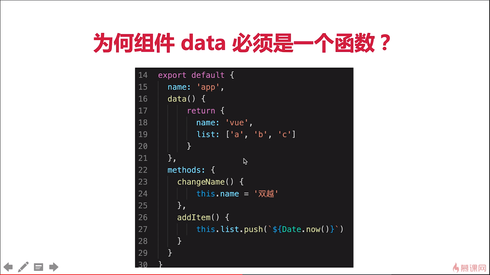
10、Ajax 请求应该放在哪个生命周期
答案：应该放在 mounted 生命周期，JS 是单线程的，Ajax 异步获取数据，放在 mounted 之前没有用，只会让逻辑更加混乱
11、如何将组件所有 props 传递给子组件？
答案：$props <user v-bind="$props">
12、如何自己实现 v-model？
答案：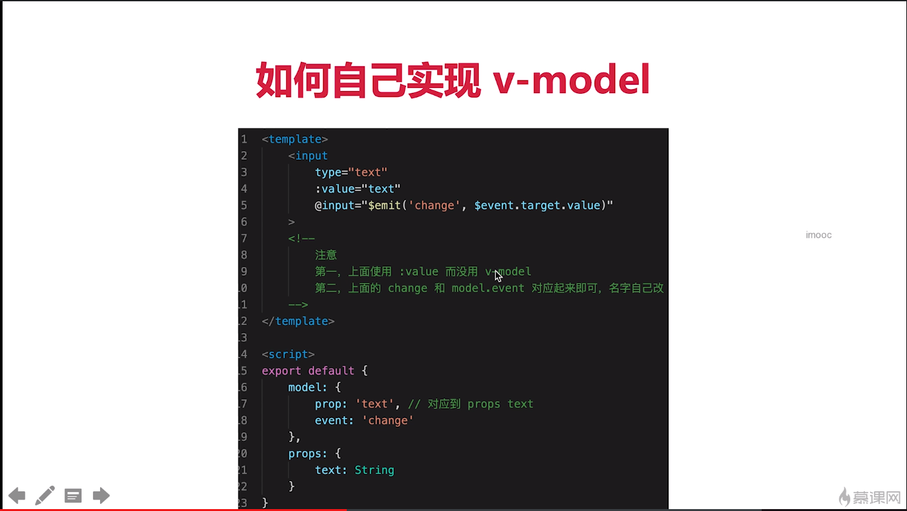
13、多个组件有相同逻辑，如何抽离？
答案： 用 mixin, mixin 的一些缺点
mixin 的用法：；定义一个 js文件将export default 中的共有内容写到里面，然后在组件中import，放到 mixin数组中
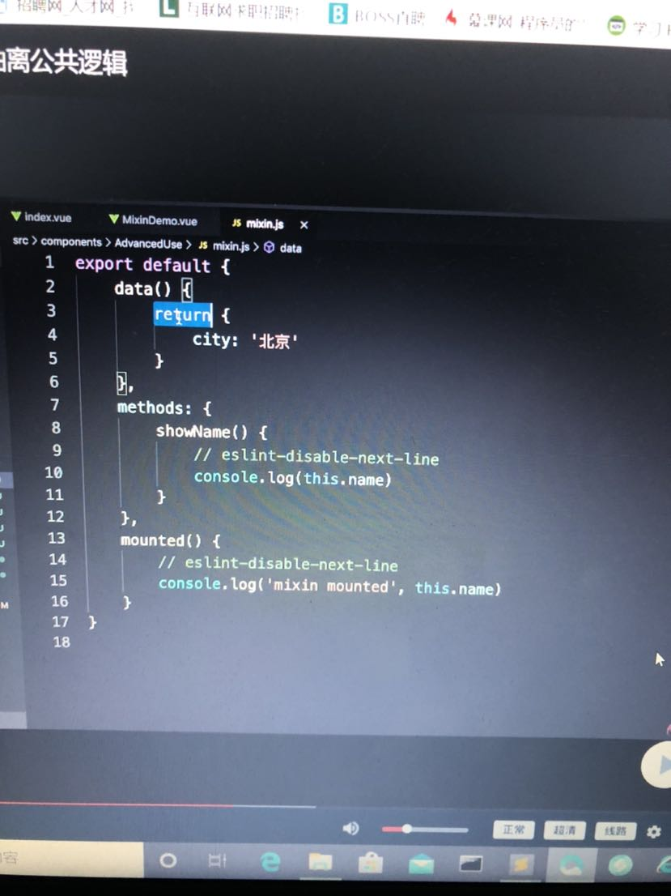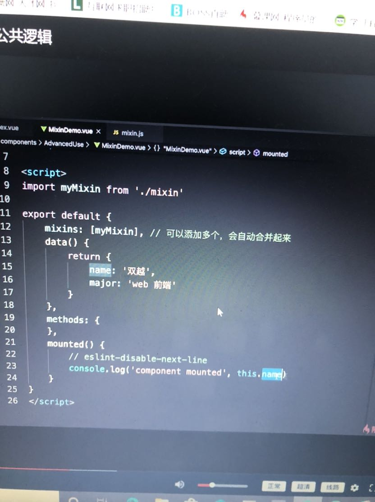
mixin 的一些缺点：
- 变量来源不明，不利于阅读。我们希望编程红的变量和方法是可查找的，但是 mixin 引入的内容编辑是不可寻找
- 多mixin 可能造成命名冲突
- 迷信和组件可能出现多对多的关系（一个组件引用多个 mixin, 一个mixin被多个组件引用），复杂度较高。多对多是最复杂的关系，很容易剪不断理还乱
在vue3 提出的 Composition API 旨在解决这些问题
14、何时使用异步组件？
答案：
- 加载大组件
- 路由异步加载
15、何时需要使用 keep-alive？
答案：
- 缓存组件，不需要重复渲染
- 如多个静态 tab 页的切换
- 优化性能
16、何时需要使用 beforeDestroy？
答案：
- 解除自定义事件 event.$off
- 清除定时器
- 解绑自定义的 DOM 事件，如 window scroll等
17、什么是作用域插槽？
答案：父组件通过 slot 获取子组件中的的值：子组件中通过自定义属性绑定数据，父组件通过 template的 v-slot 属性来接收数据
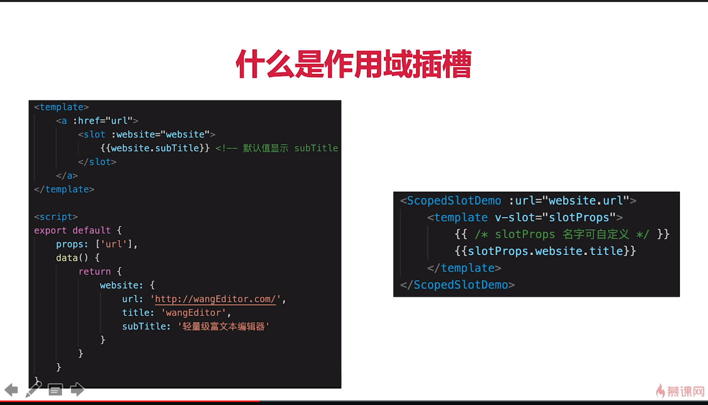
18、vuex 中 action 和 mutation有何区别？
答案：
- action 中处理异步，mutation 不可以
- mutation 做原子操作
- action 可以整合多个 mutation
19、vue-router 常用的路由模式
答案：
- hash 默认：有 #，也就是路由的hash，后面是路由
- H5 history(需要服务端支持)：没有 #，需要服务端再次，无特殊需求可选择 hash模式
20、如何配置 vue-router 异步加载？
答案：异步加载性能会优化很多，配置：component: () => import(......)
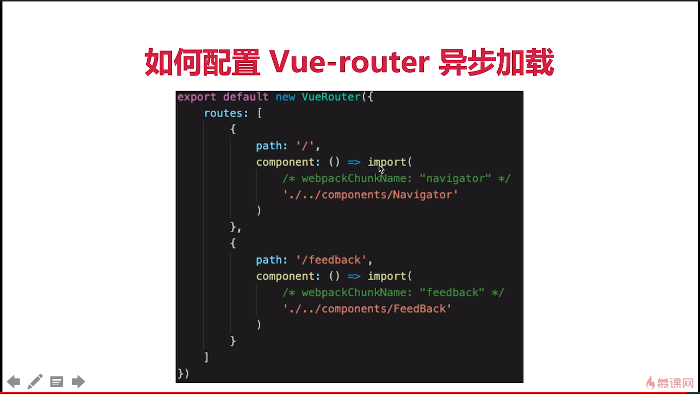
21、请用 vnode 描述一个 DOM 结构
答案：
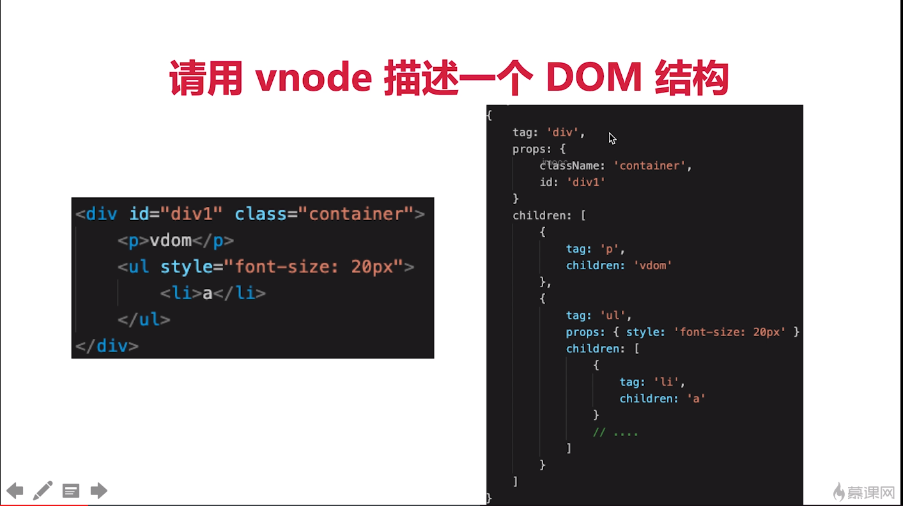
22、监听 data 变化的核心 API 是什么？
答案： Object.defineProperty,以及要想一下如何深度监听、监听数组，有何缺点
如何深度监听：
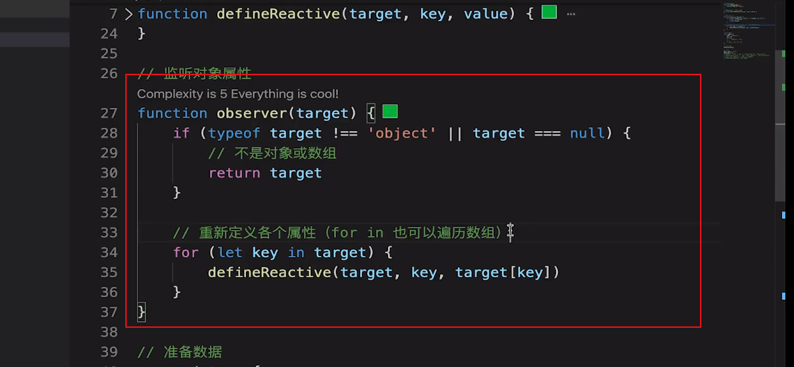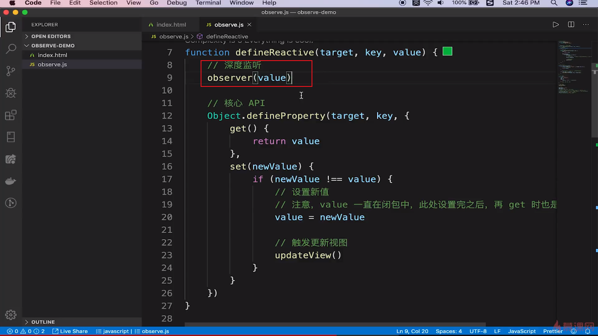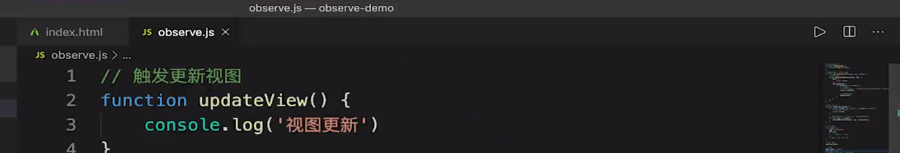
如何监听数组：
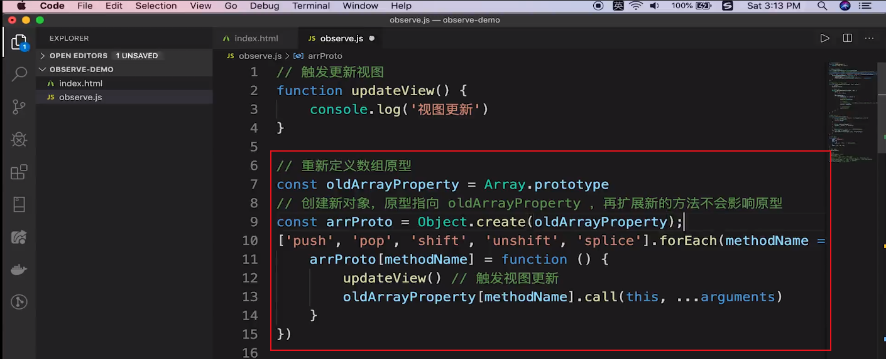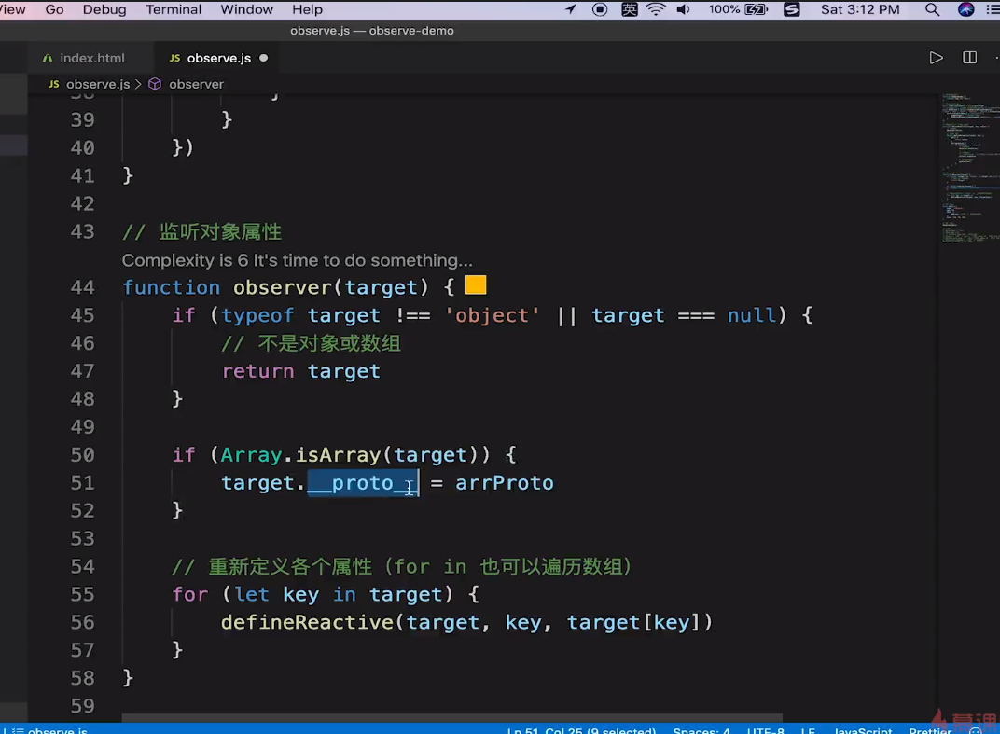
不可像以下这样做会污染全局的Array 原型：
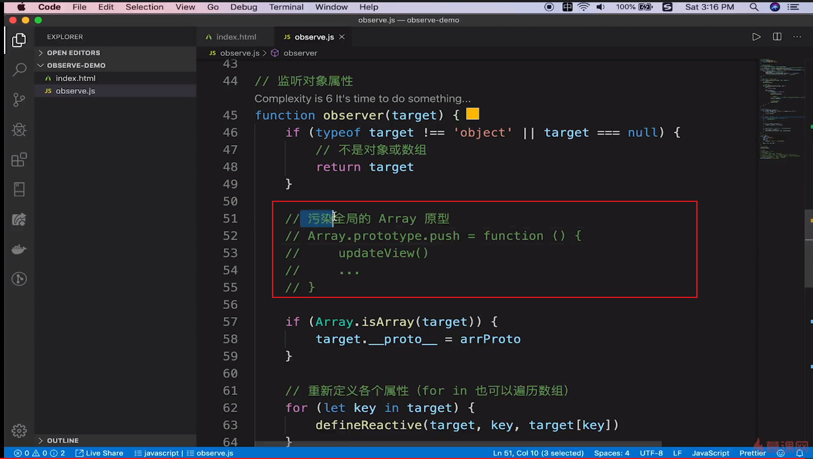
缺点：
-
- 深度监听，需要递归到底，一次性计算量大
- 无法监听新增/删除属性（所以需要 vue.set vue.delete 实现新增/删除属性）
- 无法监听原生数组，需要特殊处理
23、vue 如何监听数组变化
答案：
- Object.defineProperty 不能监听数组变化
- 重新定义原型，重写push pop 等方法，实现监听
- Proxy 可以原生支持监听数组变化
24、请描述响应式原理
答案：
- 监听data变化，监听data属性getter，setter（包括数组）参考：https://www.cnblogs.com/queenya/p/13426695.html 第3点
- 组件渲染和更新的流程：

25、diff 算法的时间复杂度
答案：
O(n)
在O(n^3)基础上做了一些调整
26、简述diff算法过程：
答案：
- patch(elem, vnode) 和 patch(vnode, newVnode)
- patchVnode 和 addVnode 和 removeVnode
- updateChildren(key 的重要性)
27、Vue 常见性能优化方式
答案：
- 合理使用v-show 和 v-if
- 合理使用computed
- v-for 时要加key，以及避免和 v-if 同时使用
- 自定义事件、DOM 事件及时销毁
- 合理使用异步组件
- 合理使用keep-alive
- data层级不要太深（因为深度监听一次性监听到底）
- 使用 vue-loader 在开发环境做模板编译（预编译）
- webpack层面的优化
- 前端通用的性能优化，如果图片懒加载
- 使用 SSR
28、vuex
vuex 是一个专门为 vue.js 应用程序开发的状态管理模式,它采用集中式存储管理应用的所有组件的状态,并以相应的规则保证状态以一种可预测的方式发生变化.
构建中大型单页应用是这个状态管理应该包含以下几个部分:
- state,驱动应用的数据源
- view,以声明方式将state映射到视图
- actions,响应在view上的用户输入导致的状态变化
几个基本概念(属性):
- state:单一状态树,储存的单一状态,是储存的基本数据.vuex 的状态储存是响应式的
- getters:可以认为是 store的计算属性,对 state加工,是派生出来的数据,返回值会根据它的依赖被缓存起来,且只有当它的依赖值发生了改变才会重新计算
- mutation:更改 vuex 的store中的状态的唯一方法是提交 mutation(mutation提交修改状态).每个mutation 都有一个字符串的事件类型(type)和一个回调函数(handler),这个回调函数就是我们实际进行状态更改的地方,并且它会接受 state 作为第一个参数,使用 store.commit, (mutation是同步的)
- action: 像一个装饰器,action提交的是mutation,而不是直接更改状态,action可以包含任意异步操作,通过store.dispatch 方法触发,也可以使用 mapAction
- module: 是 store 分割的模块,每个模块拥有直接的 state,getter,mutation,action, 甚至是嵌套子模块 -- 从上至下进行同样方式的分割模块内部的 action,局部状态通过 context.state暴露出来,根节点则为 context.rootState
用于Vue 组件(API):
- dispatch
- commit
- mapState
- mapGetters
- mapMutations
- mapActions
vuex设计思想,借鉴了 Flux,Redux,将数据存放到全局的store,再将 store挂载到每个 vue实例组件中,利用 vue.js 的细粒对数据响应机制来进行高效的状态更新
vuex的store是如何挂载注入到组件中的呢?
- 在vue 项目中先安装 vuex
- 利用vue 的插件机制,使用 vue.use(vuex)时,会调用 vuex 的install方法,安装 vuex
- applyMixin 方法使用 vue 混入机制,vue的生命周期 beforeCreate 钩子函数混入 vuexInit 方法
vuex是利用 vue 的 mixin 混入机制,在beforeCreate 钩子函数混入 vuexInit 方法,vuexInit 方法实现了 store 注入 vue 组件实例,并注册了 vuex store 的引用属性 $store
vuex 的state 和 getter 是如何映射到各个组件实例中响应式更新状态的?
vuex 的state 状态是响应式,是借助 vue的data是响应式,将 state存入vue实例组件的data中;vuex 的getters则是借助 vue的计算属性 computed 实现数据实时监听
Webpack 面试题
1、前端代码为何要进行构建和打包
答案：
代码方面：
- 体积更小（Tree-Shaking、压缩、合并），加载更快
- 编译高级语言或语法（TS,ES6+,模块化，scss）
- 兼容性和错误检查（Polyfilll, postcss, eslint）
研发流程方面：
- 统一、高效的开发环境
- 统一的构建流程和产出标准
- 集成公司构建规范（体测、上线等）
2、module、chunk、bundle分别是什么意思，有何区别
答案：
- module -- 各个源码文件，webpack 中一切皆模块
- chunk -- 多模块合并成的，如 entry import() splitChunk
- bundle -- 最终的输出文件
3、loader 和 plugin 的区别
答案：
loader：模块转换器，如 less --> css, 如识别 js 结尾的，css 结尾的，图片格式结尾的，通过 loader 转换成相应的文件格式
plugin：扩展插件，如 HtmlWebpackPlugin
常见 loader 和 plugin：
https://www.webpackjs.com/loaders/，
本人在项目中常用到的loader有
- babel-loader -- This package allows transpiling JavaScript files using Babel and webpack.
- css-loader --
css-loader解释(interpret)@import和url()，会import/require()后再解析(resolve)它们。引用资源的合适 loader 是 file-loader和 url-loade - expose-loader -- The expose loader adds modules to the global object. This is useful for debugging, or supporting libraries that depend on libraries in globals.，模块必须在你的 bundle 中被
require()过 - file-loader -- Instructs webpack to emit the required object as file and to return its public URL
- json-loader -- 注意：由于
webpack >= v2.0.0默认支持导入 JSON 文件。如果你使用自定义文件扩展名，你可能仍然需要使用此 loader。See the v1.0.0 -> v2.0.0 Migration Guide for more information - less-loader -- Compiles Less to CSS.
- postcss-loader -- Loader for webpack to process CSS with PostCSS
- style-loader -- Adds CSS to the DOM by injecting a
<style>tag - url-loader -- Loads files as
base64encoded URL
https://www.webpackjs.com/plugins/
本人在项目中常用的 plugin 有：
- HtmlWebpackPlugin（html-webpack-plugin） --
HtmlWebpackPlugin简化了HTML文件的创建，以便为你的webpack包提供服务。这对于在文件名中包含每次会随着编译而发生变化哈希的 webpack bundle 尤其有用。 你可以让插件为你生成一个HTML文件，使用lodash模板提供你自己的模板，或使用你自己的loader - ExtractTextWebpackPlugin（extract-text-webpack-plugin）-- Extract text from a bundle, or bundles, into a separate file.
- CopyWebpackPlugin（copy-webpack-plugin）-- Copies individual files or entire directories to the build directory
- UglifyjsWebpackPlugin（uglifyjs-webpack-plugin）-- This plugin uses UglifyJS v3 (
uglify-es) to minify your JavaScript - DllPlugin --
DLLPlugin和DLLReferencePlugin用某种方法实现了拆分 bundles，同时还大大提升了构建的速度。 - IgnorePlugin -- 防止在
import或require调用时，生成以下正则表达式匹配的模块：
-
-
requestRegExp匹配(test)资源请求路径的正则表达式。contextRegExp（可选）匹配(test)资源上下文（目录）的正则表达式。
-
4、babel 和 webpack 的区别
答案：
- Babel --> JS 新语法编译工具，不关心模块化
- webpack --> 打包构建工具，是多个 loader plugin的集合
5、webpack 如何实现懒加载
答案：
import()
结合Vue React 异步组件
结合vue-router React-router 异步加载路由
6、为何 Proxy 不能被 Polyfill
答案：
如class 可以用 function 模拟
如 Promise 可以用 callback 模拟
但 Proxy 的功能用 Object.defineProperty 无法模拟（没有任何一个语法可以模拟 Proxy）
7、如何产出一个lib
答案：
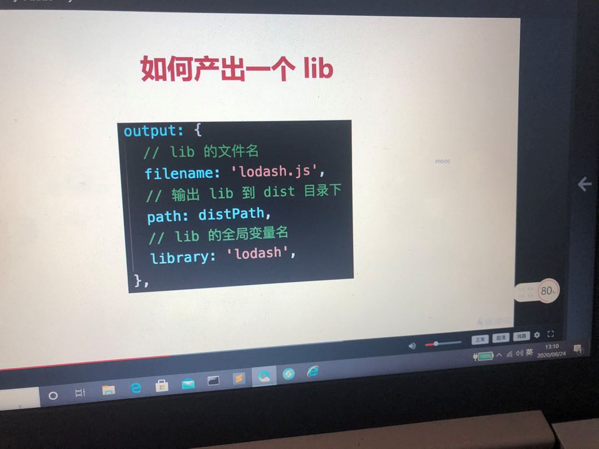
8、webpack 常见性能优化
答案：
- webpack 优化构建速度（可用于生产）
- 优化 babel-loader
- IgnorePlugin
- noParse
- happyPack
- ParallelUgligyPlugin
- webpack 优化构建速度（不可用于生产）
- 自动刷新
- 热更新
- DllPlugin
- webpack 优化产出代码
- 小图片 base64 编码
- bundle 加 hash
- 懒加载
- 提取公共代码
- 使用 CDN 加速
- IgnorePlugin
- 使用 Production
- Scope Hosting
9、babel-runtime 和 babel-polyfill 的区别
答案：
- babel-polyfill 会污染全局
- babel-runtime 不会污染全局
- 产出第三方 lib 要用 babel-runtime
框架综合应用
1、基于 Vue 设计一个购物车（组件结构，vuex state 数据结构）


大佬自己整理的吗？真的很强，深度好文